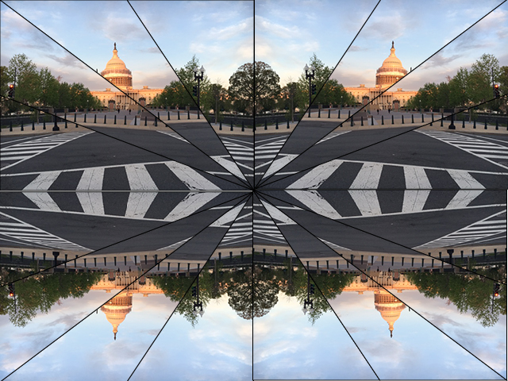
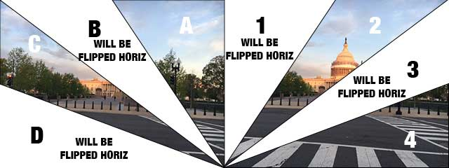

 
This is the basic P5.js sketch file, without the code required for the serial communication with the glove. The project was inspired by the following detailed discussion(s) of computer vision: http://cc.nyuad.im/2016/06/20/video-and-images/